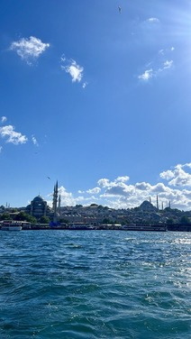
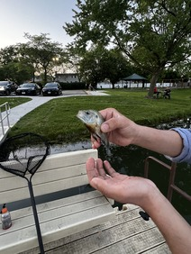
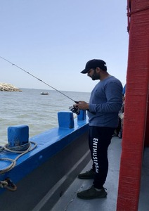

Introduction and Resume
Hobbies
Gallery
Maps
Traveling
Tour to Turkey '24

Glimpse of summer'24, breathtaking image of Hagia Sophia and Blue Mosque from the Cruise at Bosphorus River in Istanbul, Turkey.
Tour to Makkah '24
A stunning night picture of the illuminated Makkah Tower taken from the roof of Al Haram Mosque in Makkah, with its iconic clock glowing against the dark sky.
Fishing
Pond Fishing

A smallmouth bass was carefully caught using a handhandled net and released back into the pond after the picture was taken.
Open Sea fishing

A calm moment captured while fishing in the broad seas of the Arabian Sea along the coast of Karachi, focused and ready to reel in.